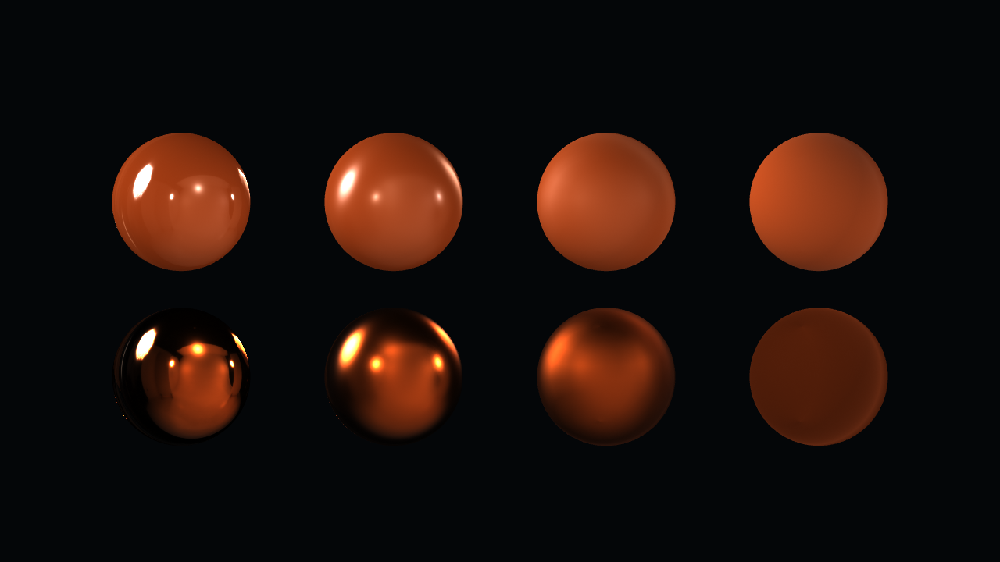
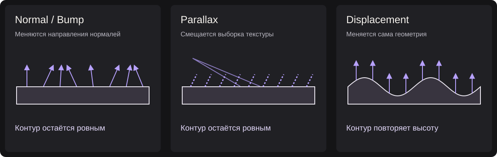
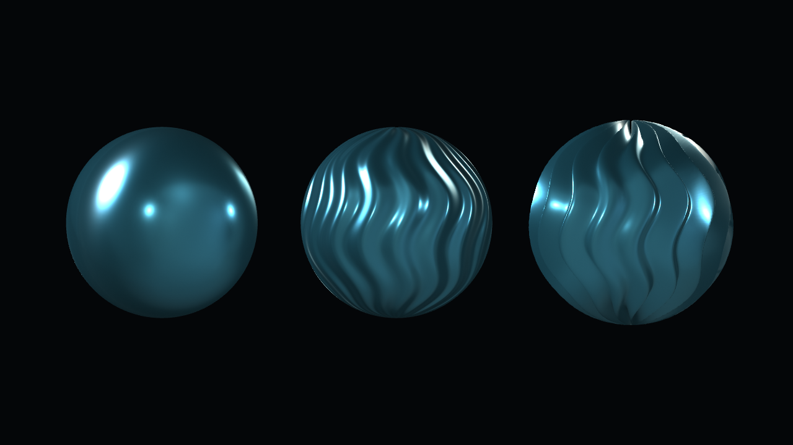
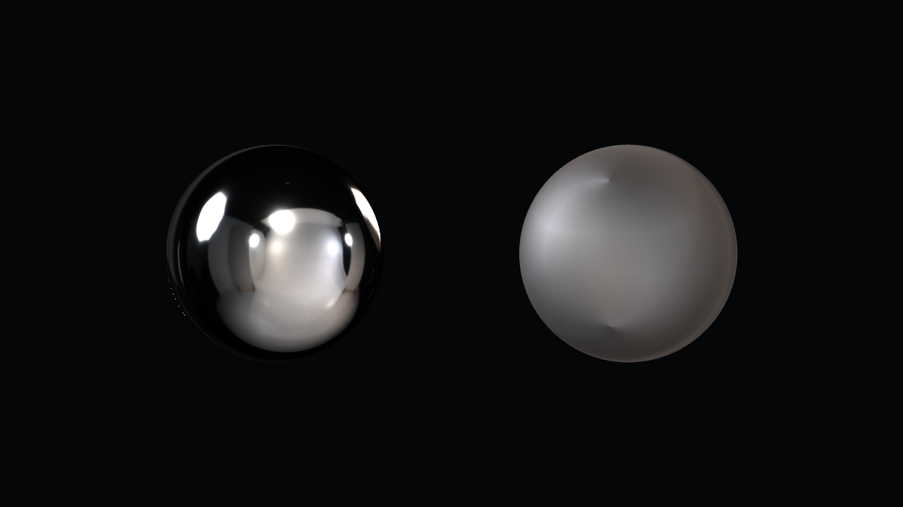

Создание материалов для интерактивного контента
Материал помогает увидеть в цифровой поверхности металл, стекло, ткань или воду. В интерактивном проекте он ещё и объясняет действие: вода расходится от касания, металл раскаляется в точке попадания, краска стирается под рукой. Разберём, как устроен материал, почему он зависит от света, как создавать его карты и каким образом данные зрителя меняют поверхность в реальном времени.
Геометрия, материал, текстура и шейдер
Геометрия задаёт поверхность: вершины, грани и наружный контур. Материал описывает её визуальные свойства и способ отрисовки. Текстура предоставляет распределённые по поверхности значения: цвет, шероховатость, высоту или другую характеристику. Шейдер — программа, которая использует эти значения для расчёта изображения. Материал может включать настройки шейдера, ссылки на текстуры и режим смешивания с остальной сценой.
Красная пластиковая кнопка может иметь постоянный цвет без цветовой текстуры. Царапины потребуют распределить шероховатость по поверхности, а логотип — задать рисунок. Один шейдер обслуживает множество материалов с разными параметрами. Одна текстура шума, напротив, может использоваться в нескольких материалах: как маска грязи, высота рельефа и источник локальных вариаций.
Материал пересчитывается для текущего ракурса, освещения и состояния сцены. Поэтому поверхность можно менять без подготовки нового видеоролика. Но замена цвета сама по себе не превращает пластик в металл: характер отражения, рельеф и реакция на окружение тоже должны измениться.
Для плоской графики, обозначений и абстрактных полей часто удобнее unlit-материал, не зависящий от света. Для поверхности, которую рассматривают с разных сторон, физически обоснованный отклик помогает сохранять ощущение объёма. Стилизованный toon-шейдер может намеренно заменять плавный свет несколькими тонами. Выбор модели определяется художественной задачей.
Сцена для сравнения
Геометрия задаёт форму объекта. Материал определяет, как поверхность выглядит при рендере. Текстура предоставляет значения по поверхности: цвет, шероховатость, направление нормали или другое свойство. UV-координаты связывают вершины поверхности с двумерным изображением. Если рисунок растягивается только на торце куба, проверьте сначала UV-развёртку. Если цвет правильный, а блик ломается по диагонали, проверьте нормали геометрии и тангенты.
Для сравнения подготовьте сферу, плоскость и объект с выраженными гранями: они показывают форму блика, масштаб узора и поведение нормалей. В TouchDesigner такую сцену можно собрать из Geometry COMP, PBR MAT, камеры, света и Render TOP. Сделайте две копии сферы с одинаковым масштабом и собственными материалами. Для проверки равного освещения можно также сравнивать два рендера одной сферы в одной позиции. Используйте Constant MAT, когда нужно увидеть карту без воздействия света. Phong MAT удобен для простого стилизованного блика, PBR MAT для материалов, которым нужны согласованные отражения и освещение. Семейство MAT в TouchDesigner.
Что такое PBR и как он рассчитывает свет
PBR — Physically Based Rendering, физически обоснованный рендеринг. Это подход к формированию изображения, в котором модель взаимодействия света с поверхностью опирается на физические закономерности. PBR не является отдельной текстурой, программой или кнопкой «фотореализм». Один набор свойств может использоваться в игровом движке, веб-сцене и системе живой графики, хотя детали и качество расчёта будут различаться.
Рассеянная и зеркальная составляющие
Представим белую лампу над красным пластиком. Часть света отражается от границы поверхности — это зеркальная составляющая, specular. Другая часть проникает внутрь, рассеивается и частично поглощается; оставшийся свет возвращается наружу как рассеянная составляющая, diffuse. Материал поглощает разные участки спектра неодинаково, поэтому рассеянный цвет пластика красный. Цвет зеркального отражения обычного диэлектрического покрытия близок к цвету освещения.
У открытого металла поведение другое: отражение может быть окрашенным, как у золота или меди, а привычную диффузную составляющую в стандартной metal/roughness-модели не используют. Медь и оранжевый пластик не должны различаться только силой белого блика. У меди характерный цвет появляется в отражениях, у пластика цвет прежде всего задаёт рассеянную составляющую.
Микрофасетки: откуда берётся шероховатость
Видимая плоскость на микроскопическом уровне состоит из множества по-разному ориентированных участков. Микрофасеточная модель описывает их статистически: моделировать каждую микроскопическую грань не нужно. Если направления близки, отражение концентрируется в узком участке. Если разброс велик, оно распределяется шире. Так Roughness управляет характером блика и отражения окружения.
Матовая поверхность тоже отражает свет. Повышение шероховатости делает зеркальный отклик шире и менее контрастным, но не означает полного отключения отражений. Размер блика зависит и от размера источника: большой софтбокс даёт широкое отражение даже на гладкой поверхности. Сравнивать Roughness нужно при неизменном освещении.
Эффект Френеля и показатель преломления
У диэлектрика отражение усиливается при скользящем угле взгляда. Стекло при взгляде прямо может казаться почти прозрачным, а под малым углом отражать комнату. Это эффект Френеля. Значение F0 описывает отражение при падении вдоль нормали. У типичного диэлектрика с IOR около 1,5 на границе с воздухом оно близко к 4%. IOR — показатель преломления; он связан с поведением света на границе сред.
В художественном шейдере узел Fresnel иногда используется как маска цветного ободка. Такая маска не становится физической моделью только из-за названия. В PBR зависимость от угла встроена в расчёт отражения, а произвольный светящийся контур — отдельный выразительный приём.
Сохранение энергии и BRDF
Неизлучающая поверхность не может вернуть больше световой энергии, чем получила. Модель согласует отражение, пропускание и поглощение. Независимое сложение сильного diffuse и сильного specular без такого согласования способно сделать объект неестественно ярким.
BRDF — функция, описывающая, сколько света отражается из одного направления в другое. Шейдер учитывает направление света, направление на камеру, нормаль и свойства поверхности, затем собирает вклад освещения. Для пропускающих свет материалов используют более общие модели рассеяния. Часть расчёта в реальном времени приближают или подготавливают заранее.
PBR не требует трассировки лучей: физически обоснованные материалы работают и в растеризаторе. Различаются способы получения теней, отражений и непрямого света, поэтому одинаковые карты в двух рендерах не гарантируют одинаковую картинку. Adobe: свет и материал · Khronos: интерактивное объяснение PBR.
Из чего складывается PBR-материал
PBR, или physically based rendering, описывает реакцию поверхности на свет. В схеме Metallic/Roughness базовый цвет, металлическость и шероховатость отвечают за разные вещи. Карта позволяет задать своё значение в каждой точке поверхности. Например, на окрашенной стальной панели краска может быть матовой, а края царапин открывают более гладкий металл.

| Вход | Что означает | Что проверить в кадре |
|---|---|---|
| Base Color | Базовый цвет поверхности. У диэлектрика это цвет рассеянной составляющей, у металла он окрашивает отражение. В карту обычно не запекают падающие тени и блики. | Поверните свет. Вычисляемый блик смещается. Нарисованное светлое пятно остаётся привязано к текстуре. |
| Metallic | 0 для дерева, пластика, краски и других диэлектриков, 1 для открытого металла. Промежуточные значения могут описывать смешанные области на уровне пикселя. | На окрашенной панели цвет краски и цвет открытой стали могут быть похожими. Разница сразу видна в отражении окружения. |
| Roughness | Шероховатость задаёт, насколько широко расходится отражение. Около 0 оно резче, при приближении к 1 оно шире и мягче. Значение не является прозрачностью. | Под одной HDRI сравните 0,15, 0,45 и 0,8. Белая лампа постепенно теряет чёткий контур в отражении. |
| Specular | Управляет базовым зеркальным откликом там, где соответствующий рабочий процесс это позволяет. Точное значение и доступные входы различаются между рендерами. | Сравните пластик под скользящим светом. Он остаётся диэлектриком и всё равно даёт блик. Ширину блика сначала подбирайте через Roughness. |
| Normal | RGB кодирует направление локальной нормали для расчёта освещения. Типичная карта в касательном пространстве выглядит сине-фиолетовой. | Скользящий свет проявляет швы, царапины и поры. Внешний контур модели остаётся геометрически тем же. |
| Height | Скалярная относительная высота. Может использоваться для параллакса или настоящего смещения вершин; это зависит от режима материала и рендера. | При косом взгляде линии на поверхности смещаются. Для изменения силуэта потребуется деформация геометрии. |
| Ambient Occlusion | AO приближённо описывает, насколько открыта точка для окружающего света. Светлое значение означает открытую область, тёмное подходит для щелей и стыков. | Проверьте углубления под мягким окружением. Слишком сильная AO превращает швы в чёрные полосы. |
| Emission | Светящийся вклад самого материала. Цвет задаёт оттенок, интенсивность определяет яркость вклада. | Погасите внешний свет и проверьте надпись. Для ореола нужен bloom или glow, а для подсветки соседней стены нужен соответствующий свет или поддержка глобального освещения. |
| Opacity и Alpha | Управляют покрытием пикселя. Для сетки с отверстиями подходит отсечение по порогу, для полупрозрачной плёнки нужно смешивание, а для физического преломления нужен подходящий режим или шейдер. | Проверьте края и пересечения прозрачных поверхностей. Смешивание может зависеть от порядка отрисовки. |
Как читать карты. Base Color и цвет Emission обычно хранятся как цветовые текстуры. Roughness, Metallic, AO, Height и Normal содержат числовые данные. При импорте проверьте, какие карты инструмент переводит из sRGB в линейное пространство. Если применить это преобразование к карте Roughness, числовые значения изменятся. В упакованной текстуре разные свойства могут храниться в отдельных каналах. В glTF, например, Roughness лежит в G, Metallic в B, а AO при совместной упаковке берут из R. Порядок проверяйте по формату или описанию набора. Входы PBR MAT · Визуальные сравнения PBR от Epic.
Как подготовить значения, чтобы материал не ломался
Base Color не должен содержать направленное освещение. Фотография кирпича включает и цвет поверхности, и тени, и блики. Шейдер добавит новое освещение поверх старого; при движении лампы тень с фотографии останется на месте. Цветовую карту очищают от выраженного освещения. Отдельная карта AO не заменяет эту подготовку.
Metallic описывает верхний видимый слой. Окрашенный металлический шкаф ведёт себя как слой краски: Metallic близок к 0. В царапине открыт металл, и там маска становится белой. Ржавчина и пыль также меняют верхний слой. Значение 0,5 не является универсальным способом сделать пластик «слегка металлическим»; оно полезно для смешанных областей и переходов.
Roughness хранит историю использования. Отпечаток пальца и высохшая капля могут почти не менять цвет, но заметно менять отражение. Сначала подберите постоянное значение, затем слабые крупные вариации и только потом мелкие детали. Одинаково сильный шум по всей поверхности выглядит как грязь независимо от задуманного материала.
Specular не является регулятором «металличности». Диэлектрик тоже отражает свет. Точный смысл и диапазон этого входа зависит от модели; он может задавать масштаб базового отражения или быть связан с IOR. Ширину блика в первую очередь подбирают через Roughness. В Specular/Glossiness-процессе набор карт отличается от Metallic/Roughness: карты нельзя переносить по сходству названий.
AO не заменяет падающую тень. Она описывает локальную доступность окружающего света, а не положение лампы. Прямой свет может попадать в углубление, поэтому постоянное затемнение всего освещения чёрной AO даёт неверный результат. Используйте предусмотренный вход и проверяйте его отдельно.
Emission, bloom и освещение соседних объектов — три задачи. Emission делает поверхность яркой без внешнего света. Ореол создаёт постобработка. Для подсветки стены рендер должен учитывать излучение в непрямом освещении либо нужен дополнительный источник света. Не следует компенсировать отсутствие освещения одним чрезмерным glow.
Нормали, высота и силуэт
Нормаль — вектор, перпендикулярный поверхности. От её направления зависит, насколько прямо на поверхность попадает свет и куда смотрит отражение. У гладкой сферы нормаль плавно меняется по поверхности. Normal Map добавляет локальные отклонения, поэтому на той же сфере можно видеть будто бы мелкие борозды. В типичной карте касательного пространства красный канал кодирует отклонение вдоль одной оси текстуры, зелёный вдоль другой, синий — компоненту вдоль исходной нормали. Почти плоский участок обычно близок к RGB 128, 128, 255.
Для чтения карты шейдеру нужен локальный базис поверхности: нормаль, касательная и второе касательное направление. UV помогают определить направление касательной. Если вмятины стали выпуклостями, проверьте соглашение производителя карты по зелёному каналу и ориентацию UV. При странном шве проверьте тангенты, зеркальные участки развёртки и совпадение карты с моделью, для которой её создавали.


| Приём | Что меняется | Практический пример |
|---|---|---|
| Bump / Normal | Bump получает наклон из перепада высот. Normal хранит направление уже в карте. Оба меняют освещение. | На плитке видны мелкие царапины. При взгляде сбоку торец остаётся ровным. |
| Parallax | Смещение точки выборки текстуры от угла взгляда даёт ощущение глубины. | Шов кажется утопленным. На границе модели он не образует настоящую выемку. |
| Displacement | Смещаются вершины геометрии. Детализация зависит от плотности сетки. | Волна меняет наружный контур пластины и может отбрасывать геометрическую тень. |
Для сравнения нанесите один узор рёбер на три плоскости. На первую подайте производную карту нормалей, на второй добавьте высоту для параллакса, третью деформируйте по высоте. Поверните камеру почти вдоль поверхности. Затем сравните силуэты и попеременно отключите карты. Так видно, где эффект остаётся в освещении, а где реально изменилась форма.
UV, масштаб рисунка и проекции
UV — двумерные координаты поверхности, по которым шейдер выбирает значения текстуры. Развёртка превращает поверхность в плоские острова со швами. Неправильные пропорции островов растягивают рисунок; разная плотность пикселей делает одну часть объекта резкой, другую размытой. Масштаб модели тоже важен: сантиметровые поры на маленькой кнопке и на огромной стене воспринимаются по-разному.
Повторение, tiling, позволяет покрывать большие площади небольшой текстурой, но выдаёт одинаковые пятна через равные интервалы. Вариации крупных масок и смешивание масштабов помогают скрыть повтор. Все карты одной царапины должны сохранять совмещение: нельзя случайно масштабировать Roughness иначе, чем цвет и нормали.
Object space связывает узор с локальными координатами объекта. World space привязывает его к пространству сцены: объект может проходить через неподвижное поле. Screen space использует координаты экрана и подходит для экранных переходов, но рисунок способен скользить по объекту при движении камеры. Выбор пространства определяет поведение поверхности.
Triplanar смешивает три плоские проекции по ориентации поверхности. Это удобно для камня и процедурных объектов без обычной развёртки, но требует дополнительных выборок текстур. Для точно расположенного текста обычно нужна более управляемая раскладка. Направления normal map при таком смешивании преобразуют корректно, а не складывают как RGB-цвета.
Подготовка комплекта карт
- Источник. Выберите библиотеку сканов, собственную съёмку, рисование по модели или процедурный граф. Проверьте права использования, масштаб и качество.
- Поверхность. Проверьте UV, нормали, тангенты и масштаб геометрии. Материал не исправит вывернутые грани.
- Подключение. Начните с Base Color и постоянной Roughness; затем включайте карты по одной, чтобы видеть вклад каждой.
- Цветовое пространство. Цветовые изображения обычно интерпретируют как sRGB, а карты параметров — как данные без такого преобразования. Освещение и смешивание рассчитываются в линейном пространстве.
- Каналы. В упакованных текстурах разные свойства находятся в R, G, B или Alpha. Проверяйте export preset и спецификацию целевой среды.
- Проверка. Поворачивайте свет и камеру, смотрите крупно и издалека. Швы и мерцание часто незаметны в одном кадре.
В glTF Roughness и Metallic читаются из G и B общей текстуры. Occlusion задаётся отдельной ссылкой и использует R; изображения при этом могут совпадать. Название ORM обычно означает AO/Roughness/Metallic, но конкретную упаковку нужно проверить. Нельзя подать всю цветную упакованную карту в один скалярный вход. Спецификация glTF.
Mipmaps — уменьшенные версии текстуры, которые помогают отображать мелкие и удалённые детали. При плохой фильтрации тонкие линии мерцают; увеличение разрешения не всегда решает проблему. Нужны подходящая фильтрация и разумная частота рисунка. Цветовая карта и normal map могут требовать разных настроек сжатия.
Одна несжатая RGBA8-текстура 4096 × 4096 занимает около 64 МиБ без mipmaps; полная цепочка добавляет примерно треть. Пять таких карт — около 320 МиБ до дополнительных копий. Для изменяемой маски следа часто достаточно значительно меньшего разрешения.
Стекло, ткань, лак и сложные покрытия
| Свойство | Что меняет | Применение |
|---|---|---|
| Transmission и IOR | Пропускание и преломление света на границе сред. | Стекло, вода, прозрачный пластик. Обычная Alpha не воспроизводит преломление. |
| Thickness и absorption | Поглощение зависит от пути света внутри материала. | Толстые области цветного стекла могут выглядеть темнее и насыщеннее. |
| Clearcoat | Дополнительный отражающий слой. | Лакированное дерево, автомобильная краска, смола. |
| Anisotropy | Характер отражения зависит от касательного направления. | Шлифованный металл и направленные борозды. |
| Sheen | Мягкий угловой отклик волокнистой поверхности. | Ткань, бархат. |
| Subsurface scattering | Свет рассеивается внутри и выходит в другой точке. | Воск, кожа, органические материалы. |
| Iridescence / thin film | Цвет отражения зависит от толщины плёнки и угла. | Мыльная плёнка, масло, интерференционные покрытия. |
Не все среды поддерживают эти эффекты одинаково. В Three.js MeshPhysicalMaterial расширяет стандартную модель рядом таких свойств, но их включение увеличивает стоимость. Для мобильного проекта иногда достаточно более простой модели и правильно выбранного освещения. Свойства MeshPhysicalMaterial.
Alpha blending смешивает поверхность с изображением позади и может давать ошибки сортировки. Alpha clipping отбрасывает пиксели по порогу и подходит для отверстий, но не создаёт стекло. Преломляющему материалу нужно изображение, которое он будет искажать; доступный способ зависит от рендера.
Что даёт карта окружения
Карта окружения описывает свет, приходящий с разных направлений. Панорама может храниться как эквидистантное изображение 2:1 или как кубическая карта из шести граней. HDRI сохраняет широкий диапазон яркости. Например, лампа и белая стена могут выглядеть одинаково светлыми на JPEG, а в HDRI лампа сохраняет намного больше энергии и даёт заметный резкий блик. Для проверки удобно взять EXR или HDR и проследить, чтобы при обработке карты яркие значения не обрезались.
В TouchDesigner загрузите панораму через Movie File In TOP, укажите его в Environment Map у Environment Light COMP и включите этот источник в рендере. Поставьте рядом хромированную и матовую сферы. Хром показывает резкое отражение окружения, а шероховатая поверхность собирает его из более широкой области. Поверните Environment Light и проследите, как перемещаются полосы отражения. Затем поменяйте только Roughness. Документация Environment Light COMP · Studio Small 01, HDRI для сравнения.
Окружение отвечает за свет и отражения, а фон определяет, что видно за объектом. Их можно настроить по-разному. Например, оставить чёрный фон и осветить металл студийной панорамой. Карта задаёт направления света и не учитывает перемещение объекта внутри конкретной комнаты. Для близкого софтбокса, локальных теней и акцента добавьте отдельный источник света. Если металл кажется чёрным, проверьте карту и список источников до того, как менять Base Color.

Освещение, отражение и фон — разные настройки
Image-Based Lighting, IBL, использует изображение окружения как источник света. Для шероховатых отражений рендер подготавливает фильтрованные представления карты. Карта представляет далёкое окружение: она не обязана показывать подошедшего к объекту зрителя. Для локальных отражений нужны отражательные пробы, плоские отражения, экранные методы или трассировка лучей. Экранный метод не располагает полной информацией о том, чего нет в кадре.
Экспозиция масштабирует яркость, а tone mapping переводит широкий диапазон в диапазон экрана. Металл может потерять цвет из-за пересвета при правильных картах. Для оценки материала зафиксируйте экспозицию и преобразование вывода. Художественную коррекцию удобнее добавлять после проверки базового отклика.
Что дают генеративные материалы
Генеративный материал вычисляет одну или несколько карт по правилам. Правила можно связать со временем, звуком, движением зрителя или состоянием сцены. Одна поверхность может высыхать, покрываться рябью или постепенно раскрывать рисунок. Можно менять масштаб и характер деталей прямо в проекте и использовать те же правила на серии объектов.
Мокрая панель от звука. Noise TOP задаёт структуру капель, Level TOP формирует маску влажных зон. В этой области снизьте Roughness, чтобы отражение стало заметнее, и аккуратно меняйте Base Color. Из той же структуры можно получить карту нормалей с помощью Normal Map TOP, если шум описывает высоту. Уровень звука плавно меняет площадь маски. При тишине маска возвращается к исходному состоянию. Сначала просмотрите серую карту, затем оцените, как она ведёт себя под HDRI.
Поверхность с памятью. При появлении зрителя добавьте пятно в маску. В цепочке Feedback TOP потихоньку ослабляйте предыдущий кадр, чтобы след исчезал. Эту карту можно подать на Emission для светящегося следа или использовать для смешивания двух карт Roughness. Если графика должна в точности повторять место касания, сначала проверьте совпадение координат источника и проекции.
Когда нужен GLSL. TOP удобно собирать и проверять как текстуру, которую используют несколько материалов. GLSL MAT пригодится, когда эффект зависит от положения на поверхности, направления взгляда или индивидуальных данных экземпляра. Например, цвет меняется только под скользящим углом, а у каждого экземпляра свой сдвиг рисунка. В движении проверяйте мерцание тонких деталей, стоимость пересчёта карт и момент сброса состояния. Для маски часто достаточно меньшего разрешения, чем для цветовой текстуры.
Как создавать материал: четыре подхода
Фотография и сканирование
Съёмка реальной поверхности даёт характерные неоднородности. Однако одна фотография не содержит готового комплекта PBR-карт. Для разделения цвета, высоты и шероховатости нужны измерения, обработка либо оценка алгоритмом. Автоматическая normal map может принять тень за углубление; результат проверяют под другим светом. Фотограмметрический цвет тоже может включать освещение съёмки.
Рисование и запекание
В Substance 3D Painter и аналогичных инструментах слои и маски наносят на модель. Запекание, baking, переносит свойства исходной геометрии в карты: например, детализацию высокополигональной модели в normal map упрощённой. Карта кривизны помогает генератору размещать потёртости на рёбрах, но не является обязательным входом PBR.
Смарт-материал автоматизирует правила, но не знает историю предмета. Ручка и защищённое углубление изнашиваются по-разному, поэтому автоматические маски уточняют. Карты экспортируют под целевую среду, её диапазоны и упаковку каналов.
Процедурный граф
Substance 3D Designer и аналогичные инструменты строят карты из функций и изображений. Сначала формируют крупную структуру: плитку, трещины, волокна. Затем добавляют средние вариации и мелкие детали. Из общей структуры получают согласованные Base Color, Roughness, Height и Normal. Независимый случайный шум в каждом канале редко создаёт ощущение одной поверхности.
Вычисление во время работы
Узор может вычисляться в шейдере или поступать из текстур, обновляемых на GPU. Тогда внешние данные меняют поверхность без экспорта нового ролика. Различайте процедурность и память: шум от времени вычисляет функцию, а след посетителя требует хранить состояние. Нейросетевая генерация — ещё один источник изображений, но не гарантия бесшовности и физически согласованных карт.
Маска связывает свойства поверхности
Маска — поле чисел, обычно от 0 до 1. Чёрное выбирает первое состояние, белое — второе, промежуточное смешивает их. Одна маска влажности может одновременно менять шероховатость камня, немного затемнять цвет и добавлять соответствующий рельеф капель. При этом влажный камень не становится металлом.
Простое смешивание параметра: результат = A × (1 − маска) + B × маска. Так можно смешивать цвета или Roughness, но полноценные слоистые покрытия сложнее. Карты нормалей не следует просто складывать как цвета: нужен подходящий способ смешивания направлений и нормализация.
Маску получают из расстояния до курсора, силуэта камеры, карты высот или истории касаний. Сначала покажите её отдельно в чёрно-белом виде. Если пятно уже на маске находится не там, изменение блика не исправит координаты. Затем отдельно проверьте каждый вход материала, которым управляет поле.
Поверхность с памятью: след, нагрев и волна
Касание можно представить как кисть, записанную в текстуру. В следующем кадре сохраняют предыдущее состояние и добавляют новый отпечаток. Для этого используют feedback или ping-pong: один буфер читают, в другой записывают, затем меняют их ролями. Одновременное чтение и запись одной текстуры обычно не заменяет такую схему.
Для затухающего свечения ослабляют прошлое значение и добавляют кисть. Чтобы длительность не зависела от FPS, ослабление связывают с прошедшим временем: например, decay = exp(−k × dt). Размытие расширяет след, но само по себе не моделирует волну. Для распространения колебаний нужны дополнительные величины и правило обновления, например высота и скорость её изменения.
Для плавления полезно разделить карту температуры и карту повреждения. Температура падает после ухода точки, а повреждение остаётся. Температура управляет свечением и текущим возмущением; повреждение — отверстием или обугленным слоем. Одно поле для всех эффектов часто даёт менее понятное поведение.
При быстром вводе отдельные отпечатки оставляют разрывы: нужно заполнять участок между предыдущей и новой точками. На сложном объекте попадание луча переводят в UV и проверяют швы развёртки. Сброс, затухание и поведение при потере ввода — часть материала как интерактивной системы.
касание, звук, положение→Состояние
влажность, нагрев, высота→Свойства
цвет, нормали, Roughness→Изображение
свет и отражение
Готовый пример: вода реагирует на действие
Указатель добавляет возмущение в поле высот на GPU. Поверхность получает изменяющийся рельеф, а направление нормалей меняет освещение. Поэтому движение читается как волна, а не как круглая картинка поверх воды. Это вычисляемая поверхность со своим шейдером; она не демонстрирует автоматически все свойства PBR.
В инсталляции вместо указателя можно подать координату руки или точки на полу после калибровки. Источник задаёт место и силу воздействия, поверхность определяет распространение и затухание. Несколько участников добавляют несколько источников в одно поле.
Лазер будто плавит материал на экране
Луч достигает цифровой панели, в этом месте появляется раскалённая кромка, поверхность деформируется и остаётся след. Так возникает ощущение непрерывности физического пространства и изображения. Для убедительности нужны свойства материала до воздействия, поведение при попадании и состояние после него.
В этом перформансе лазер усиливает экранное изображение, словно продолжая графику в пространстве. Для создания похожей связи координату светового жеста можно использовать как источник изменения цифрового материала: нагрева, деформации или следа. Это возможный приём для собственного проекта; авторское описание hex /A\ подтверждает синхронизацию аудио, видео и лазера, но не раскрывает подобный алгоритм материала.
Из чего складывается похожий эффект
- Основа. Металл с отражением окружения и вариациями Roughness. Без этого нагрев происходит на неопределённой заливке.
- Точка. Координаты ввода переводятся в координаты поверхности. Для прототипа достаточно курсора.
- Поле нагрева. Кисть добавляется в текстуру состояния; учитываются время удержания и непрерывность движения.
- Реакция. Поле меняет свечение, цвет, шероховатость и рельеф. Узкую кромку можно выделить диапазоном маски.
- Остывание. Свечение исчезает быстрее остаточной деформации. Отверстие, вмятина и световой след реализуются разными средствами.
- Вывод. Bloom, искры и звук поддерживают поверхность, но не заменяют точного совпадения координат.
В интерактивной установке вход действительно меняет состояние в текущий момент. В синхронизированном перформансе лазер и экран могут следовать общей временной последовательности или одним координатам. Результаты похожи, но видимое «попадание» не доказывает интерактивности.
На физическом экране цифровая «металличность» остаётся изображением. Зритель не получает новое физически верное отражение виртуального металла при любом перемещении головы. Поэтому для постановки важны рассчитанный ракурс, композиция отражений и связь с пространственным светом.
Как те же материалы работают в других средах
| Среда | Из чего собрать | Что проверить при переносе |
|---|---|---|
| Unreal Engine | Material Editor соединяет карты с Base Color, Metallic, Roughness, Normal и Emissive Color. В Material Instance удобно вынести масштаб и интенсивность. Для управления во время игры подойдёт динамический экземпляр. | Проверьте импорт normal map, цветовое пространство числовых карт и настройки окружения. Для общего дождя параметр влажности можно передавать серии материалов. |
| Unity | В URP Lit есть Base Map, Metallic, Smoothness и Normal Map. Для собственного эффекта можно использовать Shader Graph и передавать значения из скрипта. | Smoothness направлен обратно Roughness. Для соответствующего диапазона используют 1 минус шероховатость. Проверьте, из какого канала выбранный шейдер берёт Smoothness. |
| Веб / Three.js | MeshStandardMaterial поддерживает roughnessMap, metalnessMap, normalMap и окружение сцены. Генеративную маску можно обновлять из CanvasTexture или рендерить в текстуру на GPU. | Проверьте цветовое пространство карт и нагрузку на телефоне. Для расширенных свойств, например clearcoat, в Three.js есть MeshPhysicalMaterial. |
Для переноса возьмите одну панель с царапинами, один комплект карт и одну HDRI. Сначала сопоставьте каналы и сравните кадры с одинаковым ракурсом, затем перенесите интерактивную маску. Экспозиция, тональное отображение и качество отражений могут менять внешний вид даже при одинаковых входных картах. Входы материалов Unreal Engine · Unity URP Lit · Three.js MeshStandardMaterial.
Что меняется при переносе интерактивного материала
В TouchDesigner TOP-сеть готовит изображения и маски, CHOP-каналы управляют параметрами, а MAT определяет отрисовку геометрии. Feedback TOP хранит изменяемую текстуру, GLSL MAT позволяет задать собственную логику поверхности. В Unreal Material Editor описывает свойства, динамический экземпляр принимает параметры, Render Target хранит след, а Blueprint организует события. Render Targets в Unreal.
В Unity нужно учитывать выбранный pipeline: Built-in, URP и HDRP имеют разные возможности. Shader Graph описывает поверхность, скрипт передаёт ввод, RenderTexture хранит состояние. Важно различать общий ресурс материала и параметры конкретного объекта, чтобы одно касание случайно не меняло все копии. В вебе текстуры могут приходить из Canvas, видео и render target; большую изменяемую карту удобнее обновлять на GPU, чем пересылать полный массив из JavaScript каждый кадр.
Материалы как практические задачи
| Поверхность | Действие | Согласованные изменения |
|---|---|---|
| Мокрый камень | Касание оставляет влажное пятно. | Ниже Roughness, изменение цвета и локального рельефа; затем высыхание. |
| Раскалённый металл | Точка ввода нагревает поверхность. | Свечение, изменение отражения и остаточное повреждение с разными скоростями. |
| Матовая плёнка | Ладонь открывает прозрачную область. | Согласованные пропускание, шероховатость и преломление. |
| Живая ткань | Движение деформирует поверхность. | Крупные складки создаёт геометрия, мелкие волокна — карты. |
| Светящаяся краска | Жест записывает штрих. | Маска Emission с непрерывным вводом, затухание и умеренный bloom. |
Это возможные реализации, а не описание внутреннего устройства всех показанных работ. Для каждой поверхности полезно задать три состояния: в покое, во время действия и после него. Материал получает собственный характер поведения, а не только реакцию одного ползунка.
Производительность и проверка результата
Стоимость материала зависит от числа выборок текстур, сложности вычислений и площади в кадре. Прозрачные слои многократно обрабатывают одни пиксели. Преломление и дополнительные проходы увеличивают нагрузку. Один материал на маленькой сфере и во весь экран имеет разную стоимость.
Разделяйте постоянное и изменяемое. Структуру камня можно подготовить заранее, а во время работы обновлять только маску влажности. Для неё иногда достаточно 512 × 512, хотя цветовая карта гораздо больше. Разрешение выбирают по видимости пикселей и размеру следа. Для HDR и тонкого накопления может потребоваться формат повышенной точности.
| Симптом | Что проверить |
|---|---|
| Металл чёрный | Окружение, источники и настройки отражений. |
| Пластик металлический | Metallic и выбранный канал карты. |
| Рельеф вывернут | Соглашение Normal Map, зелёный канал, тангенты и UV. |
| Узор скользит | Координатное пространство. |
| Всё выглядит грязным | Амплитуду шума Roughness, AO и запечённый свет в Base Color. |
| След состоит из точек | Заполнение между образцами и разрешение маски. |
| Затухание меняется с FPS | Учитывается ли прошедшее время. |
| Свечение не освещает стену | Отдельно Emission, bloom и расчёт непрямого света. |
| Стекло неверно перекрывает объекты | Прозрачность, сортировку, глубину и метод преломления. |
Проверяйте материал крупно и издалека, при нескольких ракурсах, под нейтральным светом и под освещением финального проекта. Затем подключайте ввод. Устойчивое время кадра, правильные координаты и предсказуемая память поверхности важны не меньше красивого неподвижного рендера.
Источники и готовые материалы
- Adobe PBR Guide, часть 1 — свет и основы шейдинга.
- Adobe PBR Guide, часть 2 — карты и рабочие процессы.
- Epic: Physically Based Materials — визуальные сравнения.
- Poly Haven: текстуры и HDRI — исходники для сравнений.
- Three.js: материалы — интерактивные сцены с исходным кодом.